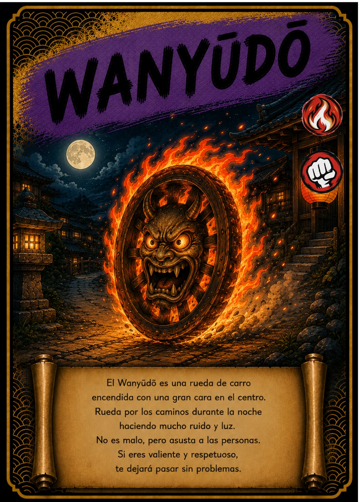

↗ Tocá la carta para verla en grande
EL ÁLBUM TAIKARDS · CARTA 47 / 48
WANYŪDŌ
La rueda que ilumina la noche
- Naturaleza / elemento
- 🔥 Fuego
- Tipo
- 👊 Ataque
📖 Te cuento mi historia
Por el camino rueda un círculo de fuego con un rostro en el centro. Wanyūdō tiene una de las apariencias más llamativas de las leyendas japonesas. La carta adapta su figura a una aventura infantil de luces, ruido y sorpresas. Imaginarlo cruzando la noche nos invita a descubrir cómo un objeto tan sencillo como una rueda puede convertirse en un personaje inolvidable.
Versión infantil basada en la carta de TAIKARDS. Sus personajes y aventuras pueden ser diferentes de las leyendas tradicionales. La naturaleza y el tipo corresponden a la clasificación del juego.
← Volver a todas las cartas